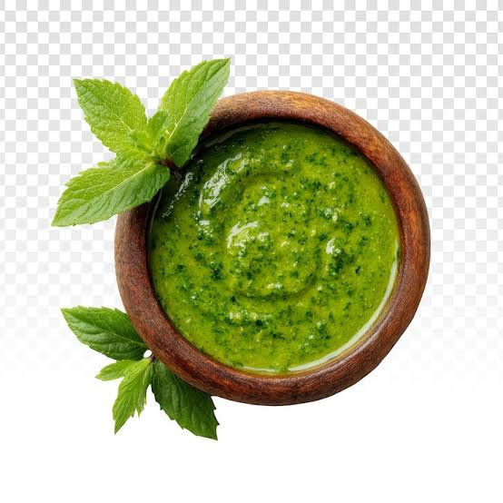

Home
Pesto alla Genovese

A staple in italian culture coming from Genova, its a mix of various earthly flavours that is perfect to go with your pasta or many other recipes
Ingredients
- Pine nuts
- Parmesan cheese
- Pecorino cheese
- Basil
- Olive oil
- Garlic
- Salt
Steps
- Toast the pine nuts in a dry pan on medium-low heat until golden and fragrant, then let them cool.
- Crush the garlic, pine nuts salt in a mortar until finely crushed.
- Add the clean, dry basil leaves and crush a few more times until combined.
- Slowly add the oil and keep crushing!
- Add both cheeses and, once again, CRUSH until finely mixed.
- Voila', the pesto is ready and should rest for a few hours before using it in other recipes, Enjoy!